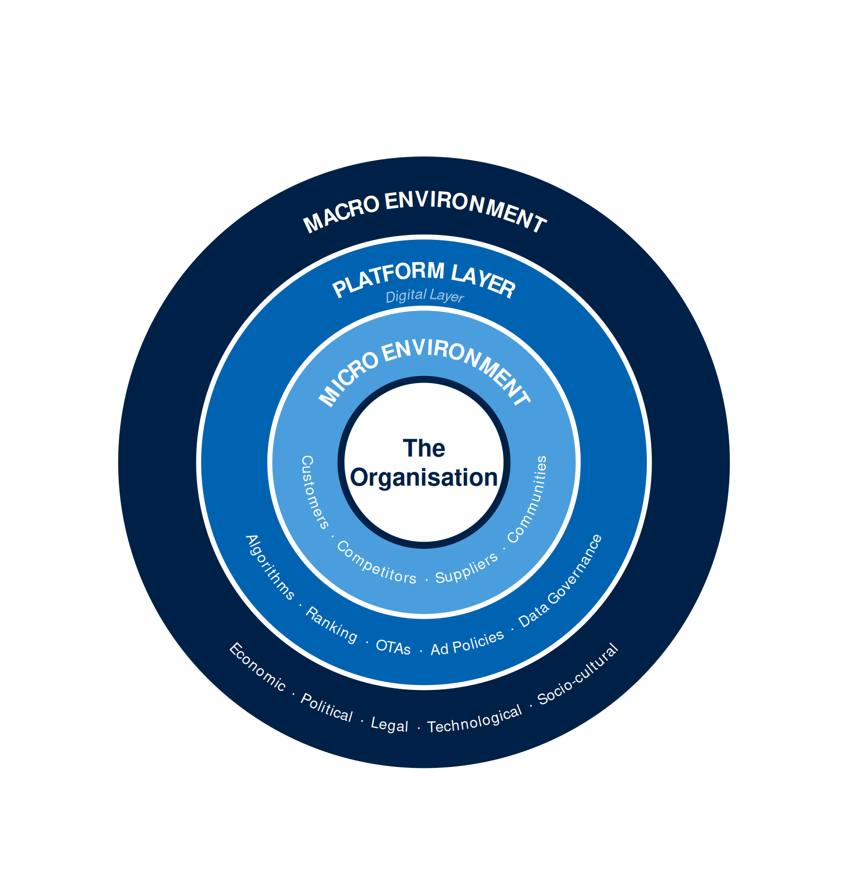
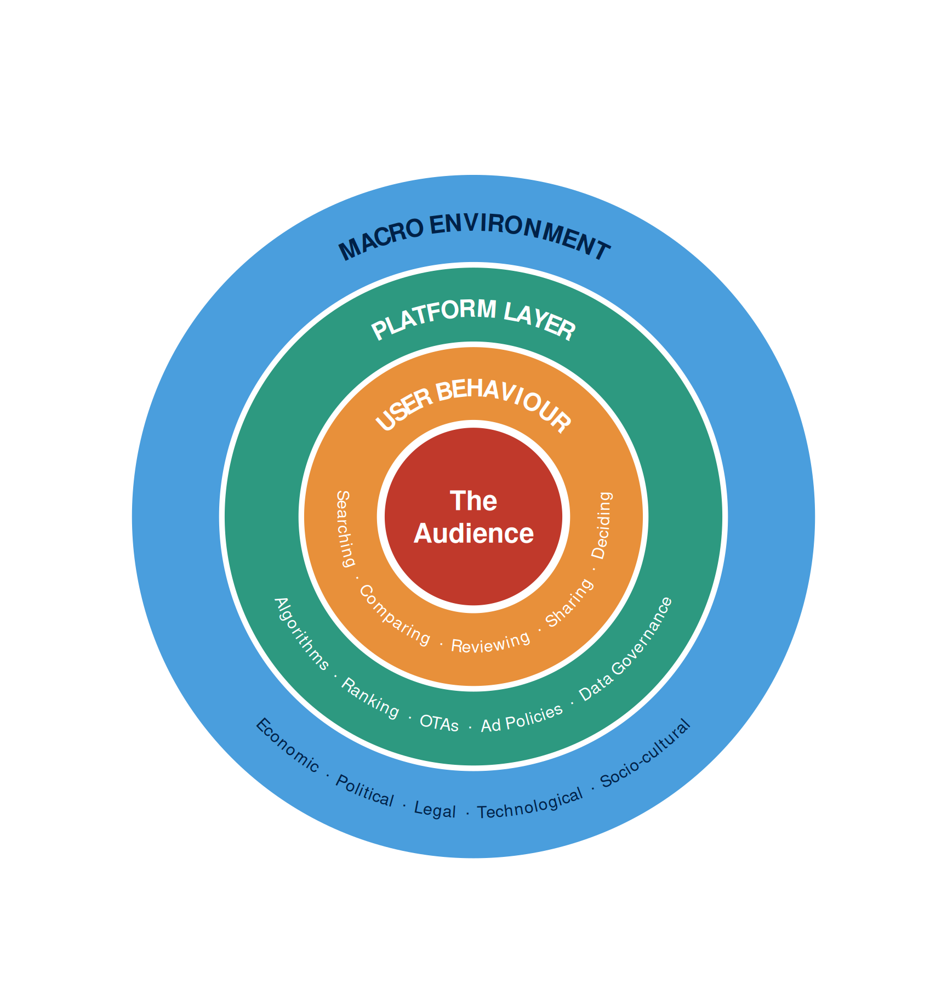
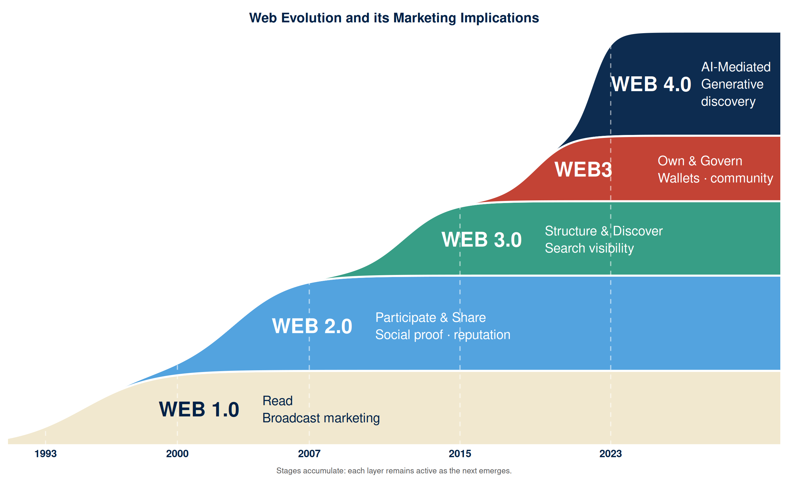
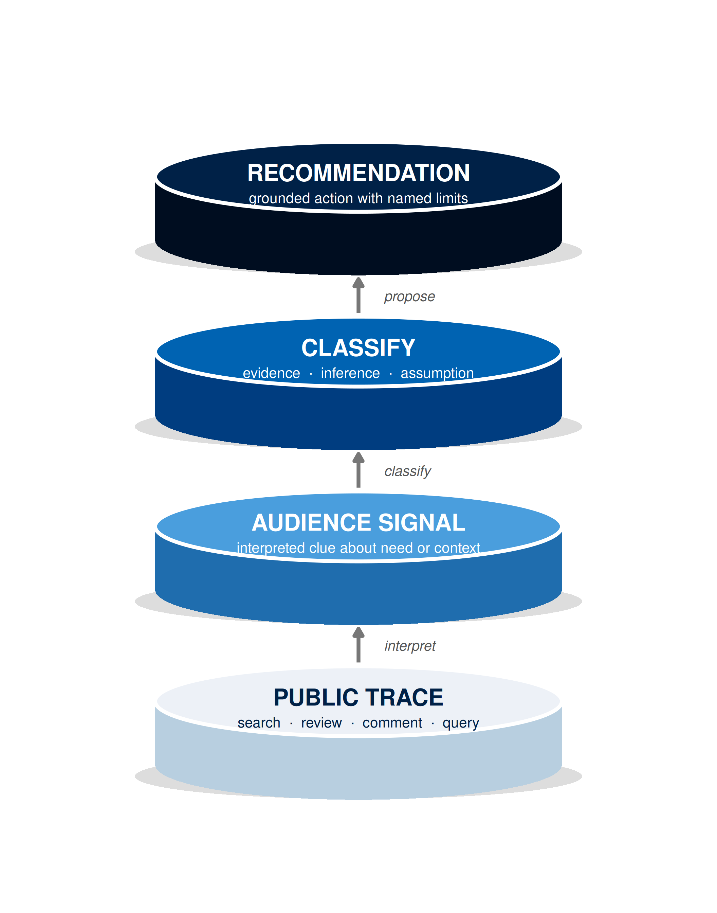
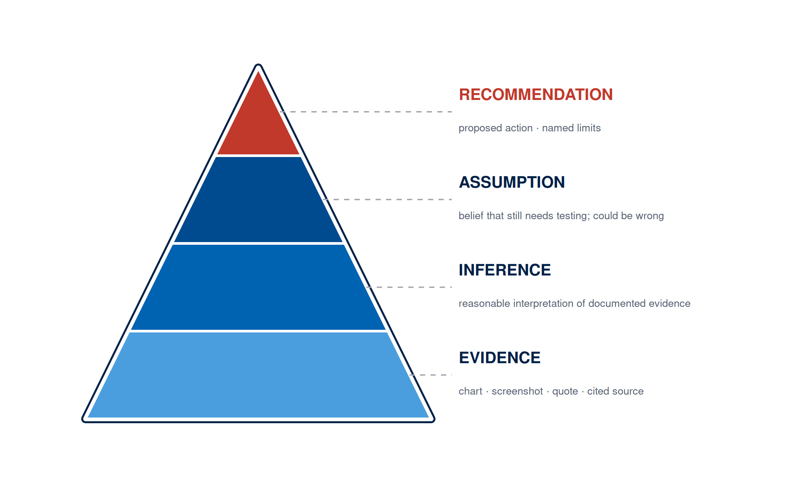
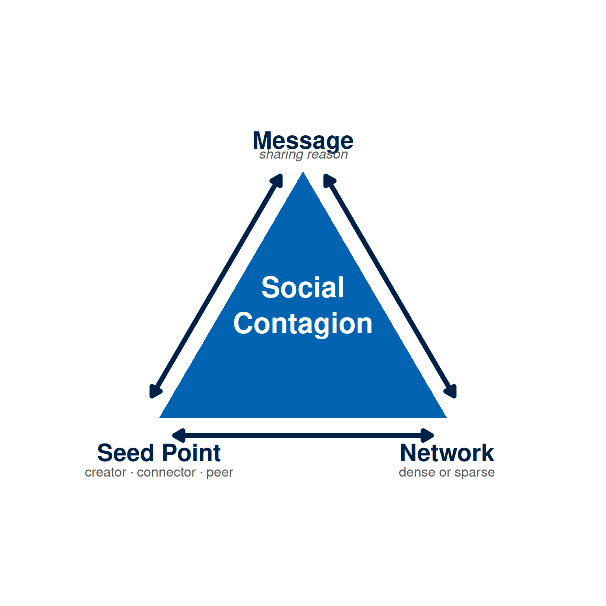

Week 1: The Digital Population
NoteOverview
A beginner planning their first campaign may instinctively reach for a platform. Digital marketing, however, begins with people before it begins with platforms. A campaign team can choose a channel, write a caption, edit a video, or build a dashboard only after it has a working account of how people search, learn, compare, trust, and decide in digital environments. Audience mapping therefore comes before platform selection and content production.
The starting point is the digital population: the people, devices, platforms, communities, habits, data traces, and social contexts that shape online communication. This population is active and participatory. People search for answers, compare alternatives, post questions, leave reviews, follow creators, join communities, share useful material, ignore irrelevant messages, and challenge claims that feel false.
For that reason, digital marketing is a form of disciplined listening as much as a form of promotion. The traces people leave online can help marketers understand needs, language, barriers, and moments of interest. A search trend, public comment, or related query can be used by marketers to plan a campaign. The same traces can also be misread, overgeneralised, or misused if not interpreted carefully: a marketer planning a campaign by treating a single comment as representative of the whole market may waste resources or damage trust.
The chapter provides a method for carefully planning a digital marketing campaign. You will examine the marketing environment, study participation on the web, interpret public traces as audience signals, separate evidence from assumption, and use communication theory to improve early campaign decisions. This week’s learning design allocates nine hours to the topic: a one-hour lecture, a two-hour tutorial, and a six-hour self-directed study period. By the end of the week, you will produce your first campaign artefact: a short persona and a one-week media plan based on public digital signals.
This Week’s Lecture
Lecture The Digital Population
Discussion
1 Introduction
⏱ 10 min
Welcome, module aims, and a quick recall quiz or poll on digital participation and signals.
Acquisition
2 Web 4.0 and Participation
⏱ 30 min
Audience signals, digital footprints, ethics, persona cues, goals-to-channels, U&G theory, social contagion, and a worked mini case.
Practice
3 Guided Whole-class Discussion
⏱ 15 min
“What can we safely infer from public signals?”: tied back to theory anchors and the mini case.
Assessment
4 Attendance & Exit Check
⏱ 5 min
Attendance, followed by a 3-item Moodle concept check.
Learning Objectives
After studying this chapter, you should be able to:
- Explain the meaning of digital population, Web 2.0 participation, digital footprint, audience signal, persona, and channel fit.
- Separate evidence, inference, assumption, and recommendation in early campaign planning.
- Use uses and gratifications theory to explain why people choose particular digital media.
- Explain how social contagion shapes the spread of digital messages.
- Interpret public digital signals cautiously.
- Draft an evidence-informed persona.
- Build a one-week media plan that connects objective, channel, message, format, resource constraint, and metric.
- Recognise ethical limits when using public online behaviour for marketing decisions.
- Use public tools such as Google Trends, DataReportal, or equivalent market insight tools (including Google Market Finder where a published website is available) to document search interest, regional signals, related queries, and priority market cues.
NoteHow to use this chapter
This chapter covers the concepts and theories needed to build an evidence-informed persona and a one-week media plan. Listen to the lecture, actively participate by answering the questions during the lecture, test your understanding by answering the review questions in Moodle.
Digital Life as a Marketing Environment
Imagine you run a small guesthouse on a local island in the Maldives. Word of mouth has kept you busy, but you want more bookings from international travellers. Someone tells you to “get on Instagram.” So you create an account, post some photographs of the rooms, and wait.
A week later, nothing.
The photographs are fine. The account exists. But the real gap lies elsewhere. What is missing is an understanding of the environment your potential guests are actually operating in: where they search, what they read before booking, which platforms they trust, how much they rely on reviews from strangers, and what specific doubts they need answered before they commit. A campaign built before that picture is in place amounts to guesswork.
This is the starting problem that marketing theory has always tried to solve.
Traditional marketing describes this as the marketing environment: the set of conditions surrounding an organisation that shape its ability to reach customers, create value, and sustain exchange relationships (Kotler, P. and Armstrong, G., 2024; Jobber, D. and Ellis-Chadwick, F., 2019). The classical model divides this environment into three layers. Closest to the organisation is its own internal world: its people, resources, and decisions. Around that sits the micro environment, the actors the organisation deals with directly: customers, competitors, suppliers, intermediaries, and publics. Further out lies the macro environment: broad forces that no single organisation controls, grouped under political, economic, social, technological, legal, and environmental conditions. The further out the layer, the more the organisation must adapt rather than direct.
For your guesthouse, the micro environment includes the guests you are trying to attract, the booking platforms that currently take commission on your reservations, and the competing guesthouses on neighbouring islands. The macro environment includes Maldivian tourism regulations, the economic conditions in the countries your guests travel from, and the cultural expectations around hospitality they bring with them.
Figure 1 maps this classical structure, extended with one addition that traditional models did not anticipate.
That addition is the platform layer, also called the Digital Layer. Platforms now sit between the organisation and the macro environment in a position that no previous intermediary occupied. An OTA (Booking.com, Airbnb, or Expedia, for example) goes well beyond listing your guesthouse: it decides how prominently it appears, what price a traveller sees first, and which review summary sits below your photographs. Google’s search algorithm, Instagram’s ranking logic, and the data governance rules that determine what you can track about visitor behaviour all sit outside your control, and they change far faster than legislation or culture. They are fast, commercially motivated, and capable of affecting your guesthouse very differently from the one two islands away. That asymmetry makes them a distinct layer in the environment, rather than simply a technological macro force.
The classical model, even with the Digital Layer added, centres the analysis on the organisation. That is useful for understanding what falls within and beyond your control, but it shows only part of the picture.
Go back to the traveller looking for a guesthouse. Her attention is entirely elsewhere: the search results in front of her, the reviews she is reading, and the photographs she is comparing against the comments below them. She is making a mental note of which guesthouses answered questions in the comment section and which left them unanswered. The forces shaping her behaviour surround her. Infrastructure determines what she can access and how fast. Platform rules determine what appears in her search results. Social norms determine whose review she trusts. Regulatory conditions shape what data exists about her journey and what she consents to share.

Figure 2 shows the same four forces recentred around the audience rather than the organisation.
This shift in perspective is the foundation of the approach in this module. The classical model asks: what surrounds our organisation, and how do we manage it? The evidence-based approach asks: what surrounds the people we are trying to reach, and where does a well-placed message fit into what they are already doing? The answer requires understanding the digital population: the collection of users, devices, platforms, and data interactions that form the measurable audience around a product, service, or cause.
The digital population is a varied collection of individuals in specific situations, each with their own habits, constraints, and reasons for being online. Most search, compare, read, and decide quietly, leaving only faint public traces. A campaign that accounts for this quiet majority alongside the visible and vocal will read the audience far more accurately. The goal at this stage is simply to understand enough of the audience’s situation to make one sensible first decision: what problem to address, what message to test, which channel to try, and what behaviour to measure. Everything else follows from that.
Web Evolution and the Participating Audience
Since Tim Berners-Lee made the World Wide Web publicly available in 1991 (Berners-Lee, T., 1991), the web has evolved through five broad stages. These stages can be classified based on the audience’s role: who creates content, who controls its meaning, how that content is discovered, and who owns the identity and data behind it. Each stage has added a new layer to the environment in which digital marketing works, and each layer remains active today. Figure 3 maps each stage and its main marketing implication.
Web 1.0 gave organisations full control of the message. Pages were static: a company homepage, a Wikipedia article, a guesthouse brochure online. Audiences arrived, read, and left. Communication flowed one way. The marketing model resembled traditional publishing: write it, publish it, wait for results. The organisation decided what a visitor saw.
Web 2.0 transferred interpretive power to the audience. O’Reilly popularised the term to describe services that improve through user participation, network effects, and user-generated content (O’Reilly, T., 2005). For marketing, the consequence was immediate: audiences began producing the context in which brand messages are read. A guesthouse now appears alongside its reviews. A product claim sits next to forum discussions and unboxing videos. A university advertisement competes with student comments posted the same week. The organisation still produces content, but the audience now produces the context that surrounds it. Social proof, reputation, and community participation became core marketing concerns.
Web 3.0 (Semantic Web) changed how campaigns are discovered. Berners-Lee and colleagues described a web where data is structured for machines to connect, interpret, and reuse (Berners-Lee, T., Hendler, J., and Lassila, O., 2001). In practice, this means search engines and AI assistants rank and surface content based on how clearly and correctly it is structured. Structured data, schema markup, and authoritative metadata have become essential: they determine whether a campaign page appears in a search result at all.
Web3 (Decentralised Web) shifts ownership of identity and access from platforms to users. Built on blockchains, wallets, and smart contracts, Web3 applications allow users to hold tokens, membership rights, and verifiable credentials alongside their platform accounts (Voshmgir, S., 2020). For marketing, this opens new models for loyalty, community governance, and consented participation, and raises new questions about how campaigns earn trust in environments where users control their own data.
Web 4.0 places AI between the campaign and the audience. Recommendation algorithms, generative search tools, and large language models now summarise, rank, and filter content before a human reads it. A traveller searching for a guesthouse may receive an AI-generated summary of options. A student researching a career path may read a synthesised answer drawn from dozens of sources. For marketers, the implication is direct: a campaign must be clear, specific, and structured enough for an AI system to represent it accurately, and credible enough to survive being paraphrased.

The participatory environment changes marketing practice in three ways.
First, audiences create useful evidence. Their searches, questions, reviews, comments, and shared content reveal the words they use and the problems they recognise.
Second, audiences influence each other. A brand may introduce a message, but peers, creators, reviewers, and communities often decide whether the message becomes credible.
Third, audiences judge how marketers behave. A campaign that listens carefully and responds to real concerns can build trust. A campaign that uses public traces carelessly can feel intrusive, stereotyped, or manipulative.
Digital marketing therefore requires attention to both communication and conduct. Participation gives marketers more evidence than traditional media usually provided, while also creating a responsibility to read that evidence carefully.
Each web stage left behind a distinct layer of evidence. Web 1.0 produced page views and referral paths. Web 2.0 generated posts, ratings, search histories, and review threads. Web 3.0 structured those traces into machine-readable metadata that algorithms could rank and surface. Web3 began attaching identity and ownership to traces through wallets and verifiable credentials. Web 4.0 now routes those traces through AI filters before a human reader sees them. The accumulated result, thirty years of participation layered on top of each other, is what marketers describe as a digital footprint.
Digital Footprints
If you planned and enjoyed a holiday recently, you left behind three distinct kinds of digital trace. You searched for destinations, read reviews, posted photographs, and wrote a rating: those were deliberate footprints you chose to create. You clicked on hotel listings, lingered on certain pages, and abandoned others: those were behavioural footprints recorded by systems as you navigated, often without your active awareness. Your booking platform collected your identity, payment details, and travel dates to satisfy financial and consumer-protection regulations: those were mandatory footprints required by law, regardless of your preferences as a user.
A digital footprint is the full collection of traces an individual creates through online activity. Deliberate footprints are often accessible as public traces, voluntarily published and visible to anyone. Behavioural and mandatory footprints remain private by default, held by platforms, analytics systems, or regulators.
Not every footprint is equally available to a marketer. Public traces can be observed without entering a private system. Website analytics can be used by a site owner when tracking is lawful and properly governed. Customer data requires stronger care because it may identify people directly or indirectly.
In this chapter, the focus is on public and low-risk traces: trend data, search suggestions, public questions, public reviews, public content, and credible reports. These traces are sufficient to begin campaign thinking, although they remain partial. They show what can be observed, while many motivations, constraints, and private decisions remain hidden. Footprints acquire planning value only through careful interpretation. The marketer’s task is to explain what each trace may indicate, what it cannot prove, and what should be checked next.
Audience Signals
A guesthouse review saying “the location was perfect but the booking process was confusing” is a raw trace. Interpreted carefully, it may signal that guests are interested but face a barrier at the moment of commitment, which is precisely the kind of gap a well-placed campaign message can address. That interpretive step transforms a footprint into an audience signal.
An audience signal is a reasoned clue about audience interest, need, language, behaviour, or context, derived from a public trace. The same trace can support more than one signal: the same review could point to friction in the booking process, a desire for clearer information, or a usability problem on a specific device. A signal earns its value through careful, step-by-step interpretation.
Public traces support five main types of signal:
- a search topic rising over several weeks may signal increasing interest, so the marketer may test timely awareness content;
- related searches mentioning cost may signal that price or value shapes the decision, so the marketer may include price clarity or comparison content;
- reviews praising convenience may signal that ease of use matters, so the marketer may emphasise speed, location, or simplicity;
- repeated public questions may signal missing information or low confidence, so the marketer may create an FAQ, explainer, or tutorial;
- a widely shared short video may signal that the format or topic travels well, so the marketer may study its opening, tone, and reason for sharing.
Each signal points toward a question rather than answering one. A trend line shows where attention is concentrating but leaves purchase behaviour unexplained. A comment thread surfaces a concern but may represent one vocal user rather than the whole market. A popular video shows that a format travels well but leaves the audience’s deeper motivation for sharing unexplained. A rising search trend for “eco-friendly guesthouses Maldives” signals growing interest and points toward a campaign worth planning. Whether those searchers book locally, what price range they expect, and which platform guides their final decision all remain open. The signal identifies the territory; documented evidence, collected next, narrows it.
Figure 4 maps the chain from a raw public trace to a defensible campaign recommendation. Each step requires a deliberate decision: what does this trace indicate, how confidently, and what action is proportionate to that confidence? The next section sets out the four categories that keep those decisions disciplined: evidence, inference, assumption, and recommendation.

Evidence, Inference, Assumption, and Recommendation
Imagine presenting your first campaign plan. You say: “TikTok is where our audience spends most of their time, they prefer short video, and a 15-second teaser will increase bookings by 20 per cent.” Your tutor asks: “Which of those is something you found, which is something you interpreted, and which is a guess?” Answering that question clearly is what turns a list of ideas into a plan that holds up.
Four categories do that work. The sequence follows the Ladder of Inference, a reasoning framework developed by Argyris and popularised in management education by Senge (Argyris, C., 1990; Senge, P. M., 1990), that maps the path from observable data to decided action. Each step carries you further from what can be shown and closer to what must be tested. Keeping the steps separate makes a campaign plan auditable and improvable.
Evidence is the material you can show: a trend chart, screenshot, public question, report, review, analytics event, or source quotation.
Inference is a reasonable interpretation of that evidence. If many related searches mention price, you may infer that cost is part of the audience’s evaluation.
Assumption is a belief that still needs testing and could turn out to be wrong. You might assume that a price-comparison message will increase enquiries, but the campaign has to test that claim before acting on it at scale.
Recommendation is the action you propose, grounded in the evidence and limited by the assumptions you have named. For example, you might recommend a landing-page section that explains price, value, and payment options, and note that its effect should be measured with a form-start or enquiry-click event.
Table 1 gives two examples. The first is a consumer education example. The second shows that the same reasoning works in a B2B setting.
| Scenario | Statement | Category |
|---|---|---|
| Short course in marketing analytics | Related searches include "free analytics tools" and "Google Analytics alternative". | Evidence |
| Short course in marketing analytics | Some users appear interested in low-cost or accessible analytics options. | Inference |
| Short course in marketing analytics | These users will prefer a course that teaches open-source tools. | Assumption |
| Short course in marketing analytics | Test a message that highlights practical analytics skills using accessible tools. | Recommendation |
| B2B supplier of open-source analytics support | Public tender notices mention "self-hosted analytics" and "data residency". | Evidence |
| B2B supplier of open-source analytics support | Some organisations may be looking for analytics options that keep data under local control. | Inference |
| B2B supplier of open-source analytics support | Procurement teams will prioritise open-source analytics support over commercial analytics suites. | Assumption |
| B2B supplier of open-source analytics support | Test a landing page section that explains self-hosting, data control, support response time, and implementation cost. | Recommendation |

Clear classification makes campaign work easier to assess and improve. It also protects the team from presenting early evidence as stronger than it is. Full capture instructions and tool guides for Google Trends and DataReportal (the recommended market insight source) are in the Week 1 Tutorial.
Classifying what you have found tells you how much confidence to place in each claim. Where to place the campaign is a different question, and two theories address it: the first explains why people choose particular digital channels, and the second explains why some messages travel through those channels and others stop at the first person who sees them.
Why People Use Digital Media
Your signals may show that your audience uses Instagram, TikTok, or YouTube regularly. That tells you where they are but not why they opened the app or what they expect to find there. Uses and gratifications theory answers that question: people choose media to satisfy specific needs, and a message that fits those needs works with the channel rather than against it (Katz, E., Blumler, J. G., and Gurevitch, M., 1973; Ruggiero, T. E., 2000).
The same person may use different channels for different reasons. A student may use TikTok for entertainment, YouTube for tutorials, Google for comparison, WhatsApp for trusted peer advice, and email for official information. A campaign that ignores these differences will place messages in the wrong context.
Common audience needs lead to different campaign decisions. An audience looking for information may search, read guides, and compare options, so the campaign should provide clear explanations and structured pages. An audience seeking entertainment may watch short videos and follow creators, so the opening, rhythm, and visual clarity matter. An audience seeking social connection may comment, share, message, or join groups, so the message should be easy to discuss or pass along. An audience expressing identity may follow brands, causes, creators, or professional communities, so tone, values, and visual style must fit that self-presentation. An audience seeking convenience may search on mobile, save posts, and use quick forms, so the campaign should reduce effort. An audience seeking reassurance may read reviews, testimonials, and credentials, so proof and risk reduction matter.
Uses and gratifications theory turns channel selection into a more precise task. The question becomes: what is the audience trying to accomplish in this channel, and what message would fit that purpose? This framing guards against a common planning error in which channels are chosen for their reach statistics before their audience context has been examined. Channels carry expectations. People approach a search engine with an information need, a short-video platform with an entertainment or learning orientation, and a messaging application with social intent. A message placed in the wrong channel competes against those expectations rather than working with them.
Modern platforms complicate the theory because algorithms also mediate gratification. People may open an app for entertainment, reassurance, learning, or connection, but recommendation systems infer those needs from behaviour and then curate what appears next. For campaign planning, this means the marketer must consider both the audience’s purpose and the platform’s likely distribution logic.
Theory-to-decision bridge. Uses and gratifications theory changes how a campaign team selects channels. Instead of choosing platforms for their headline reach figures, the team asks: what does the audience seek in this channel, and does our message serve that purpose? If the evidence shows an information-seeking audience, the campaign prioritises search pages, FAQs, and structured explainers over passive display placements. If the evidence shows a social-connection motive, the campaign prioritises shareable formats and comment-friendly content over one-way broadcast messages. The theory also guards against a common error: placing the same creative across every channel because it is already produced. Each placement should justify itself by matching a documented audience need to a channel that plausibly satisfies it.
Building a Persona From Public Signals
After a week of signal interpretation, you have evidence about what an audience searches, reads, shares, and asks. Uses and gratifications theory has told you why they open a particular channel. Social contagion thinking has told you what makes a message worth passing on. All of that analysis circles around one person you have not yet described.
A persona is what you use to bring that person into focus. It lets you gather your evidence, your theory, and your named assumptions into one working description, specific enough that you can test every channel, format, and message against a single question: does this serve the person I described? In this chapter, treat the persona as a compact argument: who they are, what they face, why they might act, and what still needs testing. It works best when it describes a real situation rather than prescribes an ideal customer type, and its standard length is one paragraph of three to four sentences.
A strong early persona includes:
- the audience segment;
- the situation or problem;
- the motivation behind the behaviour;
- barriers or doubts;
- likely media-use habits;
- evidence that supports the description;
- assumptions that still need checking.
For Week 1, use at least three evidence points:
- A search or trend signal.
- A public question, review, comment, or content signal.
- A credible contextual source, such as a report, public dataset, institutional source, or academic reference.
Example A: Short Course Promotion (Generic)
Imagine a college promoting a short course in digital marketing analytics for small business owners. Search evidence shows interest in low-cost analytics tools. Public discussions show that small business owners often ask how to know whether social media activity is working. A comparison of similar course pages shows that practical dashboards and campaign reports are common selling points.
A suitable first persona could read:
A small business owner or junior marketing officer who manages social posts and basic website updates while struggling to interpret performance data. They want practical, low-cost tools and plain-language explanations. Their main barrier is uncertainty about which metrics matter and how online activity connects to enquiries and sales. They are likely to respond to examples, checklists, simple dashboards, and evidence that the course uses accessible tools.
The persona gives direction. It suggests a message about confidence, practical skills, and accessible analytics. It also suggests useful metrics: checklist downloads, enquiry clicks, registration starts, and return visits to the course page. The team now has a justified starting point that can be tested.
Example B: Maldivian Guesthouse (Local Island Tourism)
A guesthouse on a local island in the Maldives wants to reach budget-conscious international travellers who find resort prices prohibitive. Search evidence shows rising interest in queries such as “local island Maldives,” “budget Maldives guesthouse,” and “non-resort Maldives.” Review platforms show that past guests praise the personal service and local food but ask detailed questions about airport transfers, mobile data availability, and whether snorkelling equipment is provided. A credible contextual source, such as a Maldives Monetary Authority or tourism ministry report, shows that local island guesthouse stays have grown significantly but that most bookings still originate from online travel agents (OTAs) rather than direct channels.
A suitable first persona could read:
An international traveller aged 25 to 40 who has researched Maldives holidays and found resort prices prohibitive. They are seriously considering a local island stay but are uncertain about logistics, connectivity, and whether the experience will match their expectations. They actively read guest reviews and comparison posts before booking. Their main barrier is a lack of clear, detailed information about arrival, facilities, and daily logistics.
The persona identifies the barrier (logistical uncertainty, not price alone) and the motivation (affordability without sacrificing experience). It points toward a campaign that provides logistics clarity, visual proof of the arrival route and rooms, genuine guest testimonials, and a transparent comparison of what local island guesthouses offer relative to resort prices. The channel choice follows from the audience’s review-reading habit: a well-maintained OTA listing, a direct website with an FAQ and a short arrival video, and social content that answers the questions that appear repeatedly in public reviews.
Persona Template
Use this template to draft your Week 1 persona. Fill in each bracketed field, then remove the instructions and read the paragraph aloud to check that it flows naturally. Every sentence must trace back to a documented evidence item or carry an explicit assumption label.
[Audience segment: who they are, their role or situation] who [situation or problem they face right now]. They are motivated by [what they are trying to accomplish or resolve], but their main barrier is [the specific obstacle the campaign must address]. They tend to [media-use habits: where and how they seek information or make decisions]. This persona is grounded in [brief evidence summary: which traces support the description]; the assumption that [key assumption that remains to be tested] would require further primary research to confirm.
Seven elements to check before finalising:
| Element | Your draft |
|---|---|
| Audience segment | Who they are and their situation |
| Situation or problem | What they face right now |
| Motivation | Why they are looking for a solution |
| Barrier or doubt | What stops them acting: the strategically critical element |
| Media-use habits | Where and how they consume information |
| Evidence summary | Which documented traces support the description |
| Key assumption | What still needs testing beyond the documented evidence |
NoteFree Tool: DeepPersona
DeepPersona is a free, browser-based persona generator that produces a narrative character profile from form inputs. It runs in the browser via Hugging Face Spaces and requires no sign-in or installation.
Free tier: Completely free. No account required.
DeepPersona is form-based: you fill in fields for age, occupation, location, personal values, life attitude, and interests, then click Generate to receive a narrative profile. Use it after collecting your public signal evidence. Fill each field from your documented traces rather than inventing details. Then review the generated narrative: for each claim, ask whether a public trace supports it. Unsupported claims are [ASSUMPTION] until confirmed. A profile that survives that check is a useful drafting scaffold.

Full form-filling instructions and an evidence-to-field mapping table are in the Week 1 Tutorial.
TipInteractive Lab: Audience Signal Builder
Use this app to structure your public signal evidence into a formatted persona card. Fill in at least three evidence rows, select the hierarchy stage, then click Generate. Screenshot the output for your Week 1 submission.
Tutorial link: Use during Activity 4 (Competing Interpretations) to test how different evidence classifications change your channel recommendation.
IS link: Screenshot your completed persona card and include it as the persona section of your Week 1 submission. Note the evidence quality summary score.
#| '!! shinylive warning !!': |
#| shinylive does not work in self-contained HTML documents.
#| Please set `embed-resources: false` in your metadata.
#| standalone: true
#| viewerHeight: 720
#| components: [viewer]
library(shiny)
library(bslib)
ch_map <- c(
"Awareness" = "short video or social content with broad reach",
"Knowledge" = "search landing page, FAQ, or explainer",
"Liking" = "social proof, testimonials, or brand storytelling",
"Preference" = "comparison content or detailed case study",
"Conviction" = "risk-reduction content, live demo, or free trial",
"Purchase" = "direct-response page or conversion email"
)
make_row <- function(i) {
tagList(
tags$small(strong(paste("Evidence row", i))),
selectInput(paste0("src", i), NULL,
choices = c("Google Trends", "DataReportal", "Market Finder",
"App / Store Reviews", "Social Media",
"Academic / Report Source", "Other"),
width = "100%"),
textInput(paste0("txt", i), NULL, placeholder = "Describe this signal briefly"),
radioButtons(paste0("cls", i), NULL,
choices = c("Evidence", "Inference", "[ASSUMPTION]"), inline = TRUE),
hr()
)
}
ui <- page_fluid(
theme = bs_theme(bootswatch = "cosmo", font_scale = 0.88),
p(em("Build a persona from your evidence. Fill in at least 3 rows, then click Generate.")),
layout_columns(
col_widths = c(5, 7),
card(
card_header("Your Evidence"),
textInput("topic", "Campaign topic", placeholder = "e.g. Short course in digital marketing"),
textInput("segment", "Target segment", placeholder = "e.g. Small business owners aged 25-45"),
selectInput("stage", "Hierarchy stage",
choices = c("Awareness", "Knowledge", "Liking", "Preference", "Conviction", "Purchase"),
selected = "Awareness"),
hr(),
lapply(1:4, make_row),
actionButton("build", "Generate Persona Card", class = "btn-primary w-100")
),
card(
card_header("Persona Card"),
verbatimTextOutput("persona"),
card_header("Evidence Quality"),
uiOutput("quality"),
card_header("DeepPersona Prompt"),
verbatimTextOutput("prompt")
)
)
)
server <- function(input, output, session) {
dat <- eventReactive(input$build, {
rows <- Filter(
function(r) nchar(trimws(r$txt)) > 0,
lapply(1:4, function(i) list(
src = input[[paste0("src", i)]],
txt = input[[paste0("txt", i)]],
cls = input[[paste0("cls", i)]]
))
)
list(topic = input$topic, segment = input$segment, stage = input$stage, rows = rows)
})
output$persona <- renderText({
d <- dat()
if (length(d$rows) == 0) return("Add evidence rows and click Generate.")
ev <- sum(sapply(d$rows, function(r) r$cls == "Evidence"))
inf <- sum(sapply(d$rows, function(r) r$cls == "Inference"))
ass <- sum(sapply(d$rows, function(r) r$cls == "[ASSUMPTION]"))
ch <- ch_map[d$stage]
ev_lines <- paste(sapply(d$rows, function(r)
paste0(" [", r$cls, "] ", r$src, ": ", r$txt)), collapse = "\n")
paste0(
"PERSONA CARD\n", strrep("-", 48), "\n",
"Campaign topic : ", ifelse(nchar(d$topic) > 0, d$topic, "[not specified]"), "\n",
"Target segment : ", ifelse(nchar(d$segment) > 0, d$segment, "[not specified]"), "\n",
"Hierarchy stage : ", d$stage, "\n",
"Primary channel : ", ch, "\n\n",
"EVIDENCE BASE (", length(d$rows), " item(s))\n", ev_lines, "\n\n",
"NARRATIVE STARTER\n",
ifelse(nchar(d$segment) > 0, d$segment, "This segment"),
" is at the ", d$stage, " stage. The evidence base includes ",
ev, " documented trace(s), ", inf, " inference(s), and ",
ass, " assumption(s) requiring testing.\n",
"Recommended channel: ", ch, "."
)
})
output$quality <- renderUI({
d <- dat()
if (length(d$rows) == 0) return(p("No evidence yet."))
ev <- sum(sapply(d$rows, function(r) r$cls == "Evidence"))
inf <- sum(sapply(d$rows, function(r) r$cls == "Inference"))
ass <- sum(sapply(d$rows, function(r) r$cls == "[ASSUMPTION]"))
pct <- round(100 * ass / length(d$rows))
col <- if (pct > 50) "danger" else if (pct > 25) "warning" else "success"
msg <- if (pct > 50)
"More than half are assumptions. Collect more sources before submitting."
else if (pct > 25) "Some assumptions present. Add sources to support them."
else "Good evidence quality. Well supported for a first submission."
tagList(
div(class = paste0("alert alert-", col, " p-2 mb-1"), msg),
tags$ul(class = "mb-0 small",
tags$li(paste0("Evidence: ", ev)),
tags$li(paste0("Inference: ", inf)),
tags$li(paste0("[ASSUMPTION]: ", ass, " (", pct, "%)"))
)
)
})
output$prompt <- renderText({
d <- dat()
if (length(d$rows) == 0) return("Add evidence rows to generate a prompt.")
lines <- paste(sapply(d$rows, function(r)
paste0("- [", r$cls, "] ", r$src, ": ", r$txt)), collapse = "\n")
paste0(
"Paste into DeepPersona or an AI tool:\n\n",
"Campaign topic: ", ifelse(nchar(d$topic) > 0, d$topic, "[add topic]"), "\n",
"Target segment: ", ifelse(nchar(d$segment) > 0, d$segment, "[add segment]"), "\n",
"Hierarchy stage: ", d$stage, "\n\n",
"Public signals collected:\n", lines, "\n\n",
"Using only these documented signals, suggest two 3-4 sentence persona ",
"descriptions. For each sentence, state which signal supports it. ",
"Mark unsupported claims as [ASSUMPTION]."
)
})
}
shinyApp(ui, server)A completed persona opens the next set of decisions: where to place the campaign, what to say, in what format, and how to measure whether it worked. The one-week media plan takes those decisions and arranges them into a structured, testable sequence. The persona gives the plan its direction; the plan gives the persona its practical consequence. Before that plan is built, one discipline applies to the persona and every evidence claim within it: ethical interpretation.
Ethical Interpretation
Every public trace you collect describes real people’s behaviour. Handling it with care is both the ethical requirement and the analytical discipline that keeps your persona credible. The same signals that help you describe an audience can also mislead you if you read too much into them; ethical interpretation is the habit that narrows what you claim, sharpens what you can support, and protects the people your signals describe.
Careful interpretation changes the language of a planning claim. Instead of writing “people searching this topic are desperate,” write that rising search interest may indicate problem-solving behaviour. Instead of writing that informal language proves carelessness, read informal language first as a platform style. Instead of assuming repeated exposure will make users buy, use frequency to support recall and monitor irritation, hiding, unsubscribes, or negative comments. Public comments should be treated as qualitative clues that need comparison with other evidence. Price questions should be read as evidence that price is part of evaluation, not as proof that the audience cannot afford the offer.
Careful interpretation improves both ethics and strategy. It avoids stereotypes, reduces reputational risk, and keeps the campaign grounded in evidence. Ethical caution belongs inside the planning process because it shapes how evidence is read, how audiences are described, and how campaign goals are measured.
Matching Goals, Channels, and Metrics
A persona becomes useful when it changes planning decisions. Once you have a first persona, connect the campaign goal to suitable channels. Channel choice should follow the audience’s behaviour and the action you want to encourage.
Channel fit is the match between the audience’s purpose, the campaign goal, the message format, the available resources, and the behaviour that will be measured. A channel has strong fit when people already use it for the kind of task the campaign supports. For example, a search page fits an audience looking for clear answers, while a short video may fit an audience looking for quick demonstration, social proof, or shareable explanation.
Common campaign goals suggest different channel choices and metrics:
| Goal | Typical channels | Possible metrics |
|---|---|---|
| Awareness | Short video, display, social content, creator mentions | Reach, completion rate, profile visits |
| Question-answering | Search pages, FAQs, explainers, webinars | Page views, scroll depth, time on page |
| Enquiry generation | Landing pages, email, search ads, lead forms | Form starts, enquiry clicks, submissions |
| Sharing | Guides, checklists, event posts, referral messages | Shares, saves, forwarded emails |
| Decision support | Comparison pages, testimonials, case studies | Clicks to apply, downloads, return visits |
Metrics should match the behaviour you expect. A video may be judged by completion rate. A checklist email may be judged by link clicks. A registration page may be judged by form starts and submissions. A campaign becomes clearer when every activity has a reason and every reason has a measurable signal. The one-week media plan is where these choices are brought together.
A One-Week Media Plan
The first plan should be small enough to test and clear enough to assess. A one-week media plan translates the persona into activity. Table 2 continues the analytics-course example and adds a simple resource constraint for each activity.
| Day | Channel | Message | Format | Budget Tier or Reach Constraint | Metric |
|---|---|---|---|---|---|
| Monday | Search-friendly landing page | Learn which marketing numbers actually matter | FAQ section and course overview | Owned channel; no paid spend | Landing page views and scroll depth |
| Tuesday | Social post | Stop guessing whether your posts work | Short carousel | Low paid boost or organic test | Click-through rate |
| Wednesday | Free checklist: campaign metrics for small businesses | Email with checklist link | Owned list; no paid spend | Checklist clicks | |
| Thursday | Short video | Three analytics mistakes small businesses make | Captioned 45-second video | Low paid boost with frequency cap | 50% video completion |
| Friday | Reminder post | Join the practical analytics workshop | Graphic with clear call to action | Organic reminder or low retargeting spend | Registration-start clicks |
The plan begins with searchable information, moves into social visibility, offers a practical resource, uses video for quick teaching, and ends with a direct reminder. The metrics also progress from attention to action. A plan at this stage should stay modest. Its purpose is to test whether the persona, message, channel, resource constraint, and metric are aligned.
AI-Assisted Evidence Protocol
Treat AI as a reasoning tool in early campaign work: use it to test your evidence framing, generate search routes, and organise documented traces. The governing principle is simple: no evidence, no claim. If AI suggests that an audience is price-sensitive, uncertain, ambitious, or ready to buy, you must connect that claim to a documented trace or remove it. AI output belongs in the reasoning process as a working note; it becomes a supported claim only when the underlying trace has been documented and cited.
Use a structured workflow. First, define the campaign scope and ask AI whether the framing is too broad for the evidence to support. Second, generate search routes by asking AI for keywords, related questions, platforms, and public sources worth checking. Third, collect public traces yourself: screenshots, query details, platform names, date ranges, and collection dates. Direct evidence collection must be done by the researcher, not delegated to AI. Fourth, ask AI for possible interpretations of the documented traces. Fifth, classify each statement as evidence, inference, assumption, or recommendation. Sixth, draft the persona and media plan only after classification is complete. Finally, audit every claim to confirm it is linked to evidence or explicitly marked as an assumption.
Three prompt templates support this workflow. The first is a trace interpretation prompt:
I am studying a Week 1 digital marketing task. Campaign topic: [topic].
Audience scope: [specific audience].
Public trace: [describe the trace and source].
Query / platform / date range / date collected: [details].
Separate this into evidence, possible inference, assumption, and possible campaign recommendation.
Invent no facts beyond the trace. List the trace's limits.The second is a persona drafting prompt:
Here are three documented public traces from my evidence worksheet:
1. [trace with source detail]
2. [trace with source detail]
3. [trace with source detail]
Suggest two possible persona descriptions of three to four sentences.
For each sentence, identify which evidence point supports it.
Mark unsupported claims as assumptions.The third is a media plan review prompt:
Review this one-week media plan:
[paste plan]
Check whether the objective, channel, message, format, resource constraint, and metric align.
Identify any claim that needs evidence.
Suggest improvements without adding unsupported audience claims.Every AI-assisted claim in your work must be accompanied by the public trace, source detail, prompt, AI output, and your own decision about whether to accept, revise, or reject the suggestion. A prompt log that records these four elements turns AI use from an opaque shortcut into a transparent part of the reasoning record.
The Week 1 Tutorial applies each stage of this chapter to a live scenario. You will collect public traces, classify your signals, draft a persona, and complete a one-week media plan. Copy the prompt templates above into any AI assistant, apply the no-evidence-no-claim principle to every suggestion, and record your decisions in your prompt log before submitting.
Social Contagion
A guesthouse posts a 30-second video of the boat journey from the seaplane jetty to their island. Within a week, 400 people they never targeted have shared it, including a travel creator with 80,000 followers. No paid placement, no boosted post. The message carried itself.
That is social contagion: the spread of ideas, behaviours, and preferences through social networks (Berger, J., 2013; Centola, D., 2010). In digital marketing, this spread happens through shares, comments, recommendations, imitation, creator endorsement, and visible participation. A campaign that earns contagion multiplies its reach without multiplying its budget; one that relies on paid placement alone stops the moment the budget does.
Contagion depends on message quality and network structure. A dense network, where many people know or follow each other, can reinforce trust and repeated exposure. A sparse network may spread a message across separate communities when a well-positioned connector, creator, or professional account carries it. A campaign team should therefore ask two questions: why would someone share this, and who is positioned to help it travel?
People pass messages to others for several reasons. Practical value travels when a guide, checklist, calculator, or template saves effort. Identity travels when a message helps people express belonging or aspiration. Emotion travels when a story creates pride, humour, concern, or hope, although emotion must be used responsibly. Social proof travels when visible participation by credible others lowers uncertainty. Conversation travels when the topic is clear, relevant, and easy to repeat.
The planning question is simple: why would someone pass this message to another person? If the answer is weak, the content may need a clearer benefit, stronger relevance, or a format that is easier to share. Uses and gratifications theory helps explain media choice; social contagion theory helps explain message movement. Together, they prepare the ground for a persona that is more than a demographic sketch.
Theory-to-decision bridge. Social contagion theory changes two practical decisions. First, it affects message design: the team asks whether the benefit, identity signal, emotion, or social proof is strong enough for a person to voluntarily share it with someone else. A message with a weak sharing reason should be redesigned before it is placed in any channel. Second, it affects seeding strategy: the team asks who is positioned to carry the message into the relevant network. A message that reaches a high-connectivity creator, a trusted community moderator, or a professional peer who is likely to pass it on will travel further than the same message placed in an anonymous feed. These decisions can be tested through small, low-cost seed placements before a full campaign launch.
